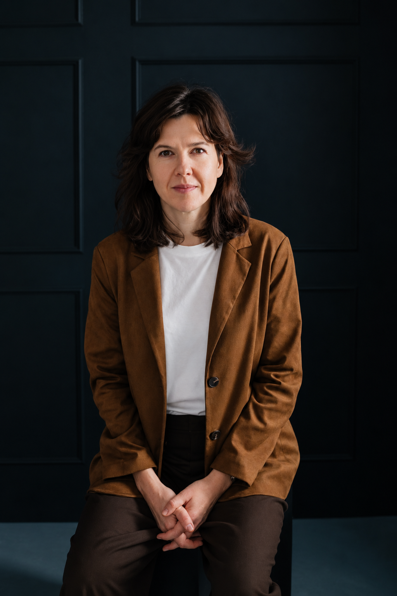
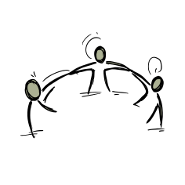

SUPERVIZIJOS
Ne apie paruoštus atsakymus.
Apie galimybę mokytis iš savo darbo.
Kasdienybėje dažnai įsisukame į darbų sūkurį, skubame, sprendžiame, keičiame, todėl ne visada lieka laiko pastebėti, kas vyksta. Supervizija suteikia erdvės trumpam atsitraukti nuo veikimo ir atidžiau pažvelgti į savo profesinę patirtį, geriau suprasti, kur stringama, kas kelia įtampą, o kas padeda judėti pirmyn.
Susitikimuose tyrinėjame santykius su klientais, kolegomis ir komanda, profesinius vaidmenis, pasirinkimus, kylančias reakcijas ir platesnę organizacijos aplinką. Keičiant žvilgsnio kampą kartais tampa matoma tai, ko būnant pačioje situacijoje pastebėti nepavyksta.
Supervizija nėra vieta, kurioje supervizorius žino teisingą atsakymą. Man svarbus gyvas dialogas, refleksija ir smalsumas tam, kas gali atsiverti pažvelgus kitaip.
Ką galima atsinešti į superviziją?
Į superviziją galima atsinešti konkrečią profesinę situaciją, klausimą ar tai, kas darbe neduoda ramybės: sudėtingą santykį su klientu ar kolega, sprendimą, dėl kurio abejojama, neaiškumą dėl savo vaidmens, pasikartojančią įtampą, pokyčius komandoje ar organizacijoje. Kartais aiškaus klausimo dar nėra – jis išryškėja tyrinėjant tai, kas šiuo metu profesiniame gyvenime užima daugiausia vietos.
Supervizija skirta ne tik ieškoti išeities iš sudėtingos situacijos. Ji suteikia erdvės pasitikrinti savo sprendimus, geriau suprasti veikimo būdus, pastebėti turimus resursus ir atrasti naujų galimybių ten, kur iš pradžių jų nesimato.


Supervizijos formos
- Individuali supervizija. Erdvė savo profesinei patirčiai ir joje kylantiems klausimams. Tyrinėjame santykius su kolegomis ir klientais, profesinį vaidmenį bei ribas, sudėtingus sprendimus, pasikartojančius sunkumus ar pokyčius profesiniame gyvenime.
- Grupės supervizija. Galimybė savo profesinę patirtį tyrinėti kartu su kitais specialistais. Kitų patirtys ir skirtingos perspektyvos padeda naujai pažvelgti į savo situaciją, išgirsti netikėtų klausimų ir atrasti naujų įžvalgų.
- Komandos supervizija. Galimybė sustoti ir pažvelgti į bendrą komandos veikimą. Tyrinėjame santykius, vaidmenis ir atsakomybes, komunikaciją, įtampas, bendradarbiavimą, kas padeda ar trukdo veikti kartu.
- Organizacijos supervizija. Galimybė pažvelgti plačiau į organizacijos struktūrą, kultūrą, santykius ir nusistovėjusius veikimo būdus. Tyrinėjame, iš kur kyla pasikartojančios įtampos, kas vyksta pokyčių metu, kas padeda organizacijai judėti pirmyn, o kas stabdo.
Profesiniai laukai, kuriuos gerai pažįstu
Didelė mano profesinio kelio dalis susijusi su švietimu, socialine sritimi ir nevyriausybiniu sektoriumi. Ilgus metus vadovavau organizacijai ir komandai, todėl gerai pažįstu ne tik vadovo vaidmenį, bet ir komandos bei organizacijos gyvenimą iš vidaus: santykius, atsakomybes, sprendimų priėmimą, pokyčius ir įtampas, kurios neišvengiamai kyla dirbant kartu.
Mano patirtis apima neformalųjį švietimą, tarpkultūrinį ugdymą ir advokaciją, įvairių projektų kūrimą ir įgyvendinimą. Dirbau ir bendradarbiavau su mokytojais bei kitais švietėjais, socialiniais ir jaunimo darbuotojais, organizacijų vadovais bei įvairių sričių specialistais. Daug metų dirbau su socialinę atskirtį patiriančiu jaunimu ir skirtingų kultūrinių patirčių žmonėmis, todėl man artimas smalsus žvilgsnis į tai, kaip skirtingai matome, patiriame ir suprantame pasaulį.
Ši patirtis supervizijoje padeda matyti ne tik atskirą profesinę situaciją, bet ir platesnį kontekstą, kuriame ji atsiranda: žmogų, jo profesinį vaidmenį, santykius, komandą ir organizaciją. Savo supervizijos praktikos šiais profesiniais laukais neapriboju ir kviečiu kitų sričių specialistus, komandas bei organizacijas.
Praktinė informacija
Individualios supervizijos trukmė ir kaina: 1 val. / 50 Eur.
Susitikimai vyksta gyvai arba nuotoliu. Vieta ir laikas derinami individualiai.
Individualios supervizijos gali vykti ir vaikštant gryname ore, ramioje, pokalbiui tinkamoje aplinkoje.
Grupių, komandų ir organizacijų supervizijų formatas, trukmė ir kaina derinami atskirai, atsižvelgiant į poreikius.
